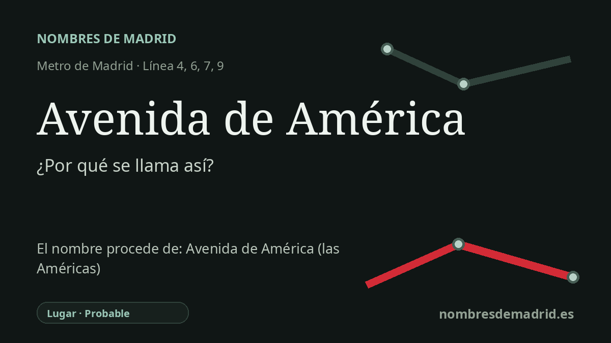

Publicado el · Investigación de Nombres de Madrid · Cómo verificamos cada origen · 8 fuentes consultadas
Respuesta rápida
La estación de Avenida de América recibe el nombre de la avenida madrileña bajo la que se encuentra. El topónimo remite a América como continente y acabó dando nombre a uno de los grandes intercambiadores de metro y autobús de Madrid.
La historia del nombre
El nombre de la estación procede directamente de la avenida de América, la gran vía situada sobre sus accesos y en una de las entradas nororientales más transitadas de Madrid. En este caso el nombre del metro no es una dedicatoria independiente: es un topónimo de transporte tomado de la calle y del intercambiador que la rodean.
El nombre de fondo es América, el continente americano. En español, América funciona normalmente como nombre continental, y la denominación madrileña encaja con una práctica urbana más amplia de dar a calles, plazas y barrios nombres de referencia internacional o hispanoamericana. Por eso el topónimo puede leerse como una referencia continental o panamericana, aunque todavía falta confirmar en archivo el acuerdo municipal exacto que dio nombre a la avenida.
La cronología del transporte es especialmente importante aquí. La memoria de Metro de Madrid de 1973, conservada por Memoria de Madrid, indica que el 26 de marzo de 1973 se inauguró la prolongación de la línea 4 entre Diego de León y Alfonso XIII, con tres estaciones nuevas: Avenida de América, Prosperidad y Alfonso XIII. Esa misma nota ya describía Avenida de América como un futuro gran nudo metropolitano en el que coincidirían las líneas 4, 6, 7 y, eventualmente, la 9.
Esa previsión acabó definiendo la estación. La línea 7 llegó a Avenida de América en 1975, la línea 6 abrió aquí sus andenes en 1979 y la línea 9 llegó en 1983 como parte del tramo norte de la línea 9B. El posterior intercambiador de autobuses, inaugurado el 7 de enero de 2000, hizo que el nombre trascendiera el plano del metro: el CRTM lo presenta como el punto que reúne autobuses interurbanos y de largo recorrido que entran por la A-2 carretera de Barcelona, junto con las líneas 4, 6, 7 y 9 de Metro.
Por tanto, la ficha actual acierta al vincular la estación con la avenida de América y al tratarla como topónimo. La parte más débil es afirmar que la avenida 'honra' de forma documentada los lazos históricos entre España y América Latina: es una interpretación razonable, pero se ha encontrado pruebas más sólidas del origen geográfico del nombre que de un acto conmemorativo preciso. También conviene matizar el contexto barrial: la estación está en el borde Salamanca-Chamartín y la avenida cruza varios distritos; el barrio de Hispanoamérica aporta una toponimia temática cercana, pero no es el entorno inmediato de la estación.